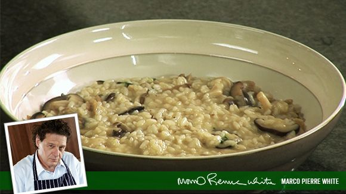

Go back to Homepage
Wild Mushroom Rissoto

Ingredients
- 160g rice
- 500ml stock
- Olive oil
- Splash of white wine
- 2 cloves garlic finely chopped
- 1 shallot onion finely chopped
- Some Thyme
- 200g wild mushrooms chopped/sliced to cook evenly
Instructions
Prep: 5 mins Cooking: 15 mins
Pan for risotto (takes 17 minutes)
- Cook oil and onions in a pan
- Add the rice to the pan
- After a few minutes add white wine
- Add about 100ml of stock
- A few minutes later add another 100ml stock
- Add some thyme
Pan for mushrooms (takes 5 minutes)
- Heat oil in a hot pan
- Add shallot onion and garlic and cook for 2-3 minutes
- Add wild mushrooms to the pan
- Cook for 5 minutes and add thyme and mix well
- Add mushrooms to risotto pan